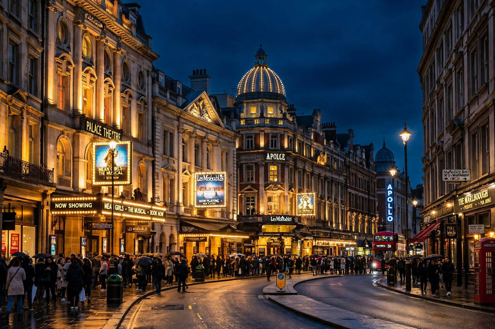

| Location | West End of London, England |
|---|---|
| Designation | Mainstream professional theatre district |
| Key venues | ~40 theatres |
| Longest-running show | The Mousetrap (since 1952) |
West End theatre is mainstream professional theatre staged in the large theatres in and near the West End of London. Along with New York City's Broadway theatre, West End theatre is usually considered to represent the highest level of commercial theatre in the English-speaking world. Seeing a West End show is a common tourist activity in London; annual attendances have exceeded 15 million in strong years.
London theatre dates to the 16th century, but the West End district grew up from the 17th century onward, with the Theatre Royal, Drury Lane (opened 1663) among its oldest surviving venues. The 19th century saw rapid expansion along Shaftesbury Avenue and the Strand; the arrival of electric lighting, long-running musicals, and Agatha Christie's The Mousetrap — running continuously since 1952, apart from the 2020–21 pandemic closure — defined the modern era. Musicals such as Les Misérables and The Phantom of the Opera became global phenomena, and more recently Hamilton transferred from Broadway to the Victoria Palace Theatre.
Approximately forty venues are classed as West End theatres, the majority owned by groups including Delfont Mackintosh Theatres, Nimax Theatres, LW Theatres (Andrew Lloyd Webber's company), and the Ambassador Theatre Group. Producing houses such as the National Theatre and the Royal Shakespeare Company's London base sit slightly outside the commercial West End definition, as does Shakespeare's Globe, though all are part of the wider London theatre ecosystem.
West End and Broadway productions frequently transfer between the two cities, and the industries share talent on and off stage. West End ticket prices are generally lower than Broadway's, and its theatres are typically smaller and more intimate, while Broadway's Times Square district concentrates its houses around a few blocks of midtown Manhattan.